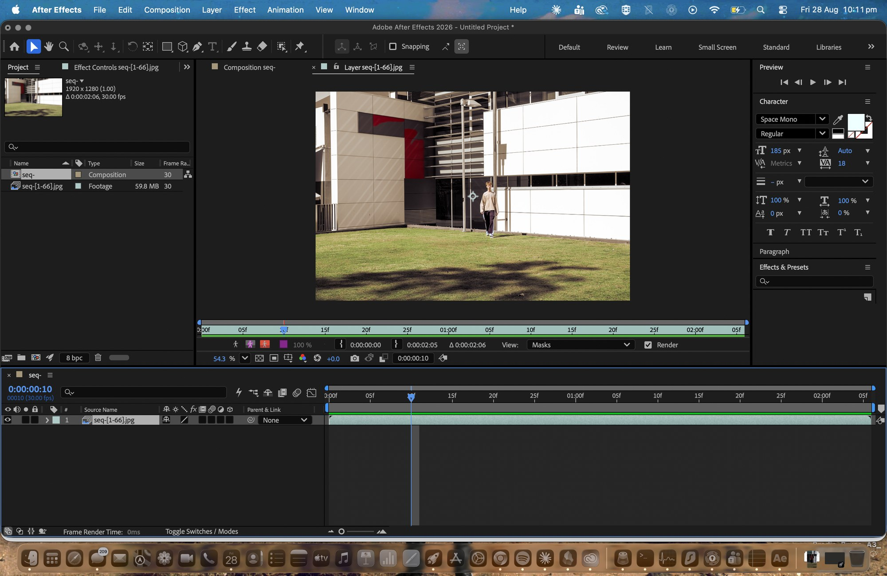
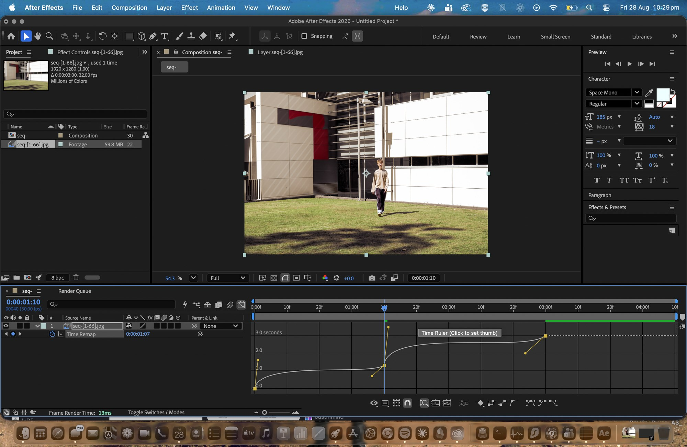
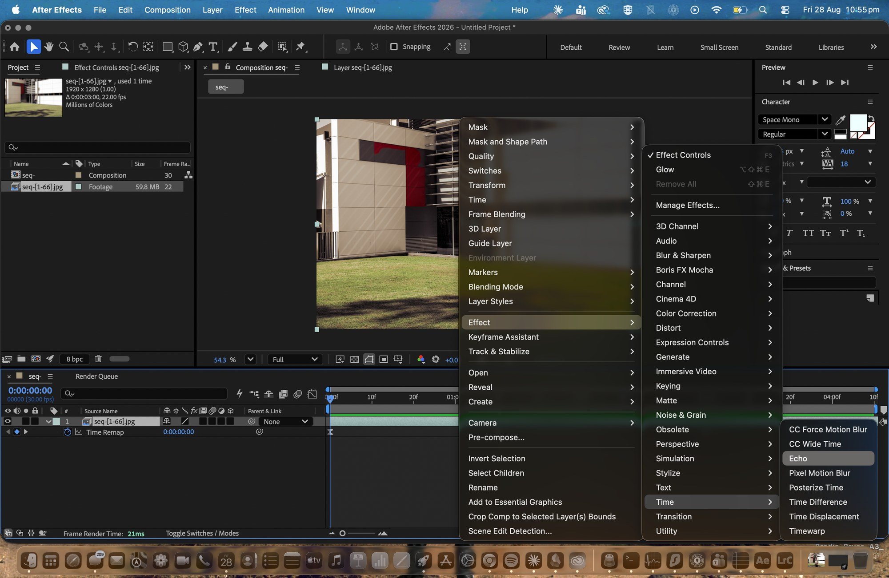
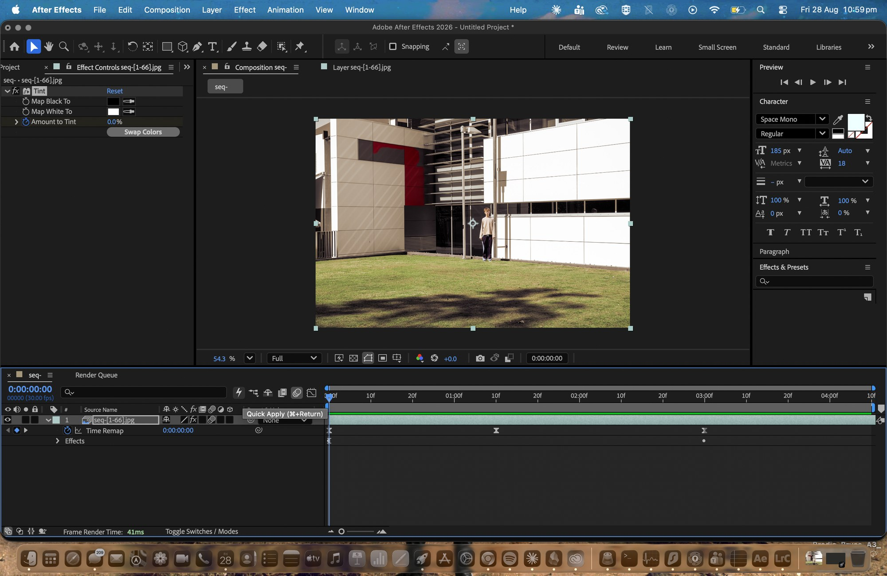
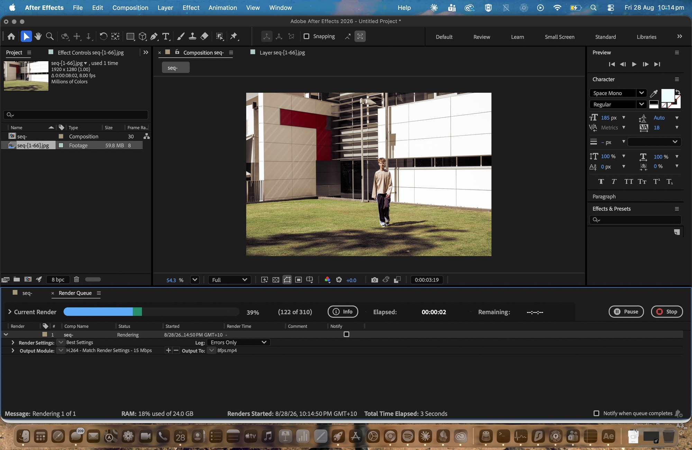
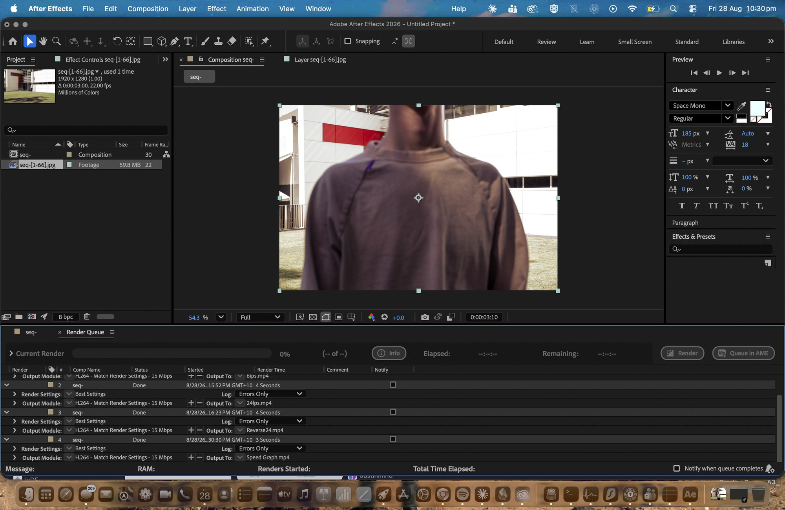

Non-linear capture
Linear motion is recorded in real time by a camera that runs continuously, whereas non-linear motion is built out of frames captured one at a time, like stop motion or timelapse or hyperlapse. Everything on this page is non-linear and none of it was filmed. I took 66 separate photographs, graded them, and only gave them a frame rate afterwards, which means the passage of time in these videos was decided at the desk rather than at the camera.

I renamed them on export so they run from seq-1 to seq-66 with no gaps, because After Effects builds a sequence by finding consecutively numbered files and a gap makes it either refuse the import or drop black frames into the middle. Ticking JPEG Sequence in the import dialog is the difference between getting one piece of footage and getting 66 separate stills, and the Project panel confirms it worked with a single item at 59.8 MB. I left Force alphabetical order switched off, because the filenames are not zero padded and sorting alphabetically would have ordered them 1, 10, 11 and scrambled the walk completely.
Frame rate as the main control
Because the source is a set of stills rather than footage, the frame rate is not a property of the recording at all, it is a decision I made afterwards. The same 66 frames can occupy eight seconds or three depending on what I set, and that choice is what decides whether the result reads as animation or as film.
This sits under the rate where separate images fuse into motion, so you still see each individual frame. The walk comes out mechanical and stepped, closer to stop motion than to video, and it runs for eight seconds which gives you enough time to read it as a series of separate decisions.
The same frames at cinema rate. The stepping disappears and it reads as continuous movement, but the clip is now under three seconds, so the smoothness costs me the length. That is the trade at the centre of this task, because when the frame count is fixed pace and duration end up being the same dial.
Time-Reverse Layer plays the same frames backwards without rerendering anything at all. He walks away instead of towards, and because the sun was fixed the shadows now move in a way the light cannot account for, which you tend to notice before you consciously register that it is reversed.
The four above all run at one constant rate, whereas this one changes speed inside the clip itself. I enabled Time Remapping, dropped keyframes along the timeline and then eased them so the curve ramps rather than sitting flat, which makes it start slow, accelerate through the middle of the walk and settle again at the end.
The speed graph

This is the Time Remap graph in the timeline, where the line represents playback speed across the length of the clip and the yellow handles are what I dragged to shape it. Flat means a constant rate and steep means fast. Because I eased the keyframes rather than leaving them linear the curve bends instead of stepping, so the change in speed arrives gradually and you feel it as acceleration rather than as a jump cut. It is the only one where the timing changes while the clip is actually running, which makes it the closest thing here to animating time rather than just setting it.
Effects and keyframes
The four above only change the timing of the frames, whereas these two change the image itself using effects applied to the layer and then animated with keyframes.
Echo holds previous frames on screen underneath the current one, so he drags a trail of himself behind him as he walks. Echo Time at −0.153 pulls from just before the playhead, six echoes at 0.7 decay means each one is fainter than the last, and Maximum as the operator means the brightest pixel wins wherever they overlap. This is the same idea as my Task 03 composite except moving rather than frozen, because that one stacked the positions into a still and this one builds and dissolves the stack while it plays.
Tint maps the blacks and whites to two chosen colours, and Amount to Tint is keyframed from 0 to 100 percent so the clip drains from full colour into monochrome as it plays, with the keyframes eased so the change ramps rather than switching over at a constant rate. Motion blur is turned on for the layer as well, which smears fast movement across each frame instead of leaving it crisp, and since these were shot at 1/640 there was no real blur to begin with, so it puts back something the shutter speed had removed.

Five values, and every one of them changes the result. Fewer echoes with a longer echo time gives you separated ghosts, while more echoes with a shorter time smears it into a blur. I settled between the two so the trail reads as a set of distinct positions rather than as a smudge.

The stopwatch next to Amount to Tint is the thing that turns a fixed setting into an animated one. You can see the keyframe markers sitting on the Time Remap and Effects rows underneath, which is the timing change and the colour change both running on the same clip at once.
Render

Output Module set to H.264 at 15 Mbps on Best Settings, rendered into After Effects / Output. Each one took between four and eight seconds, because 66 frames is barely any material, which means all of the actual work in this task sits in the decisions rather than in the processing.

The four timing variations finished, with Echo and the keyframed Tint rendered after this. I kept one variable moving at a time on purpose, because that is the only way any difference between the outputs can be put down to the thing I actually changed rather than to something else drifting alongside it.